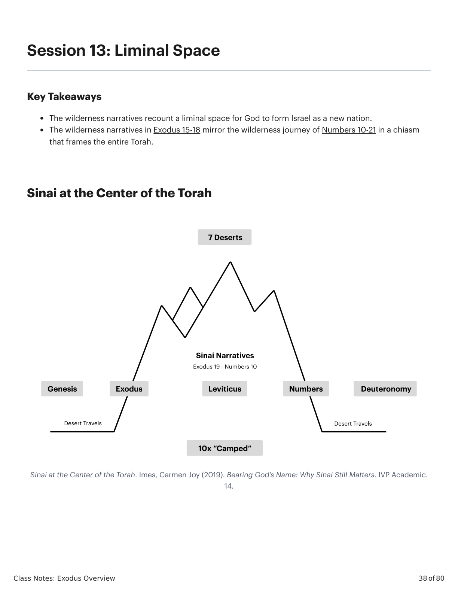
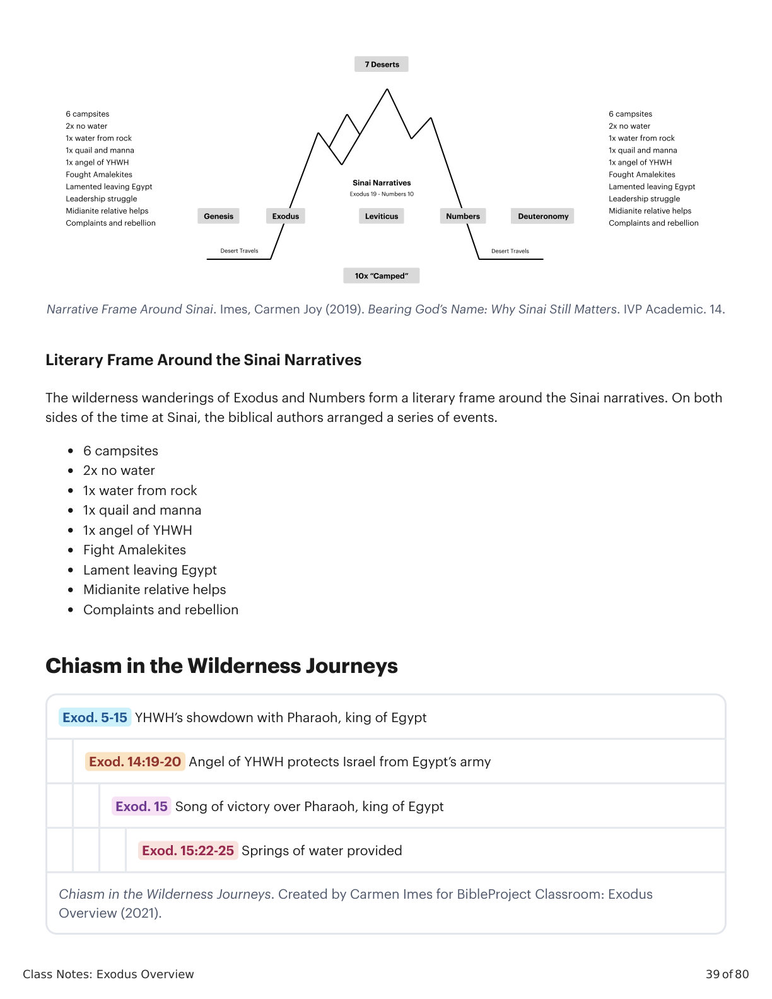
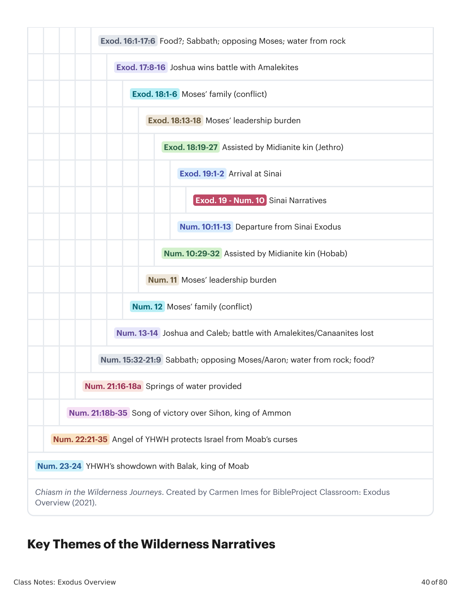

Sessão 13: Liminal SpaceSession 13: Liminal Space
\n
\n
Class Notes: Exodus Overview
38 of 80
Session 13: Liminal Space
Key Takeaways
The wilderness narratives recount a liminal space for God to form Israel as a new nation.
The wilderness narratives in Exodus 15-18 mirror the wilderness journey of Numbers 10-21 in a chiasm
that frames the entire Torah.
Sinai at the Center of the Torah
Sinai at the Center of the Torah. Imes, Carmen Joy (2019). Bearing God’s Name: Why Sinai Still Matters. IVP Academic.
14.
\n

Êxodo X:Y. Tradução e Design Literário por Tim Mackie para BibleProject Classroom: José (2021).Exodus X:Y. Translation and Literary Design by Tim Mackie for BibleProject Classroom: Joseph (2021).
\n
Class Notes: Exodus Overview
39 of 80
Narrative Frame Around Sinai. Imes, Carmen Joy (2019). Bearing God’s Name: Why Sinai Still Matters. IVP Academic. 14.
Literary Frame Around the Sinai Narratives
The wilderness wanderings of Exodus and Numbers form a literary frame around the Sinai narratives. On both
sides of the time at Sinai, the biblical authors arranged a series of events.
6 campsites
2x no water
1x water from rock
1x quail and manna
1x angel of YHWH
Fight Amalekites
Lament leaving Egypt
Midianite relative helps
Complaints and rebellion
Chiasm in the Wilderness Journeys
Exod. 5-15 YHWH’s showdown with Pharaoh, king of Egypt
Exod. 14:19-20 Angel of YHWH protects Israel from Egypt’s army
Exod. 15 Song of victory over Pharaoh, king of Egypt
Exod. 15:22-25 Springs of water provided
Chiasm in the Wilderness Journeys. Created by Carmen Imes for BibleProject Classroom: Exodus
Overview (2021).
\n

Êxodo X:Y. Tradução e Design Literário por Tim Mackie para BibleProject Classroom: José (2021).Exodus X:Y. Translation and Literary Design by Tim Mackie for BibleProject Classroom: Joseph (2021).
\n
Class Notes: Exodus Overview
40 of 80
Exod. 16:1-17:6 Food?; Sabbath; opposing Moses; water from rock
Exod. 17:8-16 Joshua wins battle with Amalekites
Exod. 18:1-6 Moses’ family (conflict)
Exod. 18:13-18 Moses’ leadership burden
Exod. 18:19-27 Assisted by Midianite kin (Jethro)
Exod. 19:1-2 Arrival at Sinai
Exod. 19 - Num. 10 Sinai Narratives
Num. 10:11-13 Departure from Sinai Exodus
Num. 10:29-32 Assisted by Midianite kin (Hobab)
Num. 11 Moses’ leadership burden
Num. 12 Moses’ family (conflict)
Num. 13-14 Joshua and Caleb; battle with Amalekites/Canaanites lost
Num. 15:32-21:9 Sabbath; opposing Moses/Aaron; water from rock; food?
Num. 21:16-18a Springs of water provided
Num. 21:18b-35 Song of victory over Sihon, king of Ammon
Num. 22:21-35 Angel of YHWH protects Israel from Moab’s curses
Num. 23-24 YHWH’s showdown with Balak, king of Moab
Chiasm in the Wilderness Journeys. Created by Carmen Imes for BibleProject Classroom: Exodus
Overview (2021).
Key Themes of the Wilderness Narratives
\n

Êxodo X:Y. Tradução e Design Literário por Tim Mackie para BibleProject Classroom: José (2021).Exodus X:Y. Translation and Literary Design by Tim Mackie for BibleProject Classroom: Joseph (2021).
\n
Class Notes: Exodus Overview
41 of 80
The people’s ingratitude and rebellion meets God’s gracious provision in cycles of work and rest, which result
in a contrast between serving YHWH and serving Pharaoh.
Reflection Question
Have you had a season where you experienced what felt like a liminal time? How did that time shape you or
help form your identity?
\n